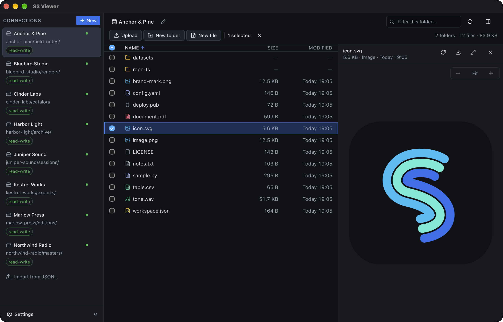

Media, without waiting
Images, audio and video are streamed from S3 with HTTP range requests. Playback starts on the first bytes; seeking fetches only what you seek to.
macOS · Linux · MIT
An S3 browser that renders images, audio, video, PDFs, Markdown, source code, CSV and Parquet tables in place. Ranged reads mean a 4 GB video starts playing immediately, and your access keys never leave the machine in cleartext.

Most S3 tools show you a file name and a size. This one shows you the file.
Images, audio and video are streamed from S3 with HTTP range requests. Playback starts on the first bytes; seeking fetches only what you seek to.
Rendered with pdf.js: zoom, fit to width, page navigation. Pages load on demand instead of pulling the whole document.
Markdown renders with a sanitised preview and a raw toggle. Code is highlighted for about 30 languages, JSON is pretty-printed, CSV becomes a table.
Columnar files are read properly — schema, columns and the first rows — instead of being treated as opaque bytes.
SSH keys, .pub, .pem, dotfiles and extensionless files are
shown as text when the bytes say they are text, rather than being labelled binary.
Listings stream in pages and the table renders only the rows on screen, so a prefix with a hundred thousand objects scrolls like any other.
A probe tells you whether these credentials can list, read, write and delete. Per-connection read-only mode blocks every write in the interface.
Every upload and download reports progress per file; a transfer that fails can be retried or cancelled without leaving the app. When an upload would overwrite an object you choose: replace it, replace all, or skip the existing ones. Selecting several files downloads them into one folder.
Send a selection to another folder, or to a different saved connection, with a server-side copy. A file can travel between buckets without passing through your disk, and the same menu handles folders and single objects.
Paste the credentials JSON you already use, or a boto3 client snippet straight out of your code, and the app builds the connections from it — secrets are encrypted before anything is written to disk.
On launch the app checks GitHub Releases and offers the new version, which it installs and restarts into. The download is checked against a signing key built into the app, so a tampered bundle is refused rather than installed.
←/→ move between the connections, the list and the preview;
⌘L pastes an s3:// address, ⌘D downloads,
⌘⇧C copies S3 URIs, ⌘A selects all, Shift+click covers ranges.
Every action is reachable without a pointer; the row menu is on ⇧F10.
Linux releases are a .deb and an AppImage in the same release.
On Linux there is an extra step before that: nothing — they just run.
0600 inside a 0700 directory, written atomically.Free, MIT licensed, and the source is the same code you run.